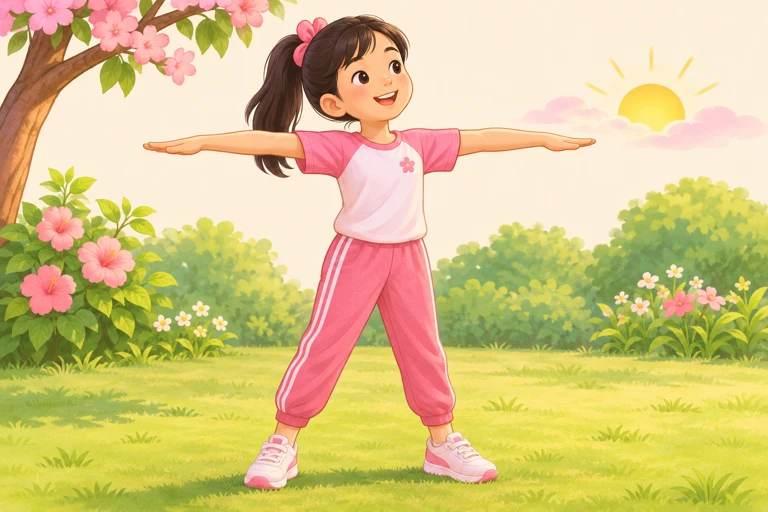

took photos
đã chụp ảnh
TOOKPHOTOS
I took photos on my family trip.
Chưa đánh dấu
Review 3 · Học trước, thử nhớ rồi luyện đề
Ôn Units 11–15: nghe thường/chậm, ABC, hội thoại và bài luyện tự lưu. Nhóm thực phẩm là phần Extension riêng.
Review 3 có âm thanh đi kèm (giọng máy Anh Mỹ). Em có thể nghe dù máy chưa cài giọng Anh. Nếu lỗi mạng, bấm nghe lại hoặc chọn giọng thiết bị nếu có.
Bấm Nghe khi em sẵn sàng. Trang không tự phát âm thanh.
Nghe cả từ/cụm, đọc theo rồi dùng ABC để nhớ cách viết. ABC đọc tên chữ cái, không phải bài luyện âm. Với cụm nhiều từ, các nhóm chữ được tách riêng.
Chưa có từ cần ôn. Em chọn một nhóm rồi bấm “Cần ôn lại” ở từ muốn luyện thêm nhé.
đã chụp ảnh
I took photos on my family trip.
Chưa đánh dấu
đã nhặt vỏ sò
We collected seashells last weekend.
Chưa đánh dấu

trang trí nhà
I will decorate the house at Tet.
Chưa đánh dấu
làm nem/cuốn chả giò
We will make spring rolls at Tet.
Chưa đánh dấu

bánh pizza
We will have pizza at our party.
Chưa đánh dấu
nước ép táo
We will have apple juice at our party.
Chưa đánh dấu
cuối tuần vừa qua
Last weekend, I bought souvenirs.
Chưa đánh dấu
tuần tới
We will have a party next week.
Chưa đánh dấu

tập thể dục buổi sáng
He does morning exercise every day.
Chưa đánh dấu
hai lần mỗi tuần
She plays sports twice a week.
Chưa đánh dấu
đau đầu
In the role-play, I have a headache.
Chưa đánh dấu
đau răng
In the role-play, I have a toothache.
Chưa đánh dấu
nghỉ ngơi
The advice line is: You should have a rest.
Chưa đánh dấu
không nên
The advice line is: You should not watch too much TV.
Chưa đánh dấu
nhóm sữa và sản phẩm từ sữa
Milk is in the dairy group.
Chưa đánh dấu
nhóm ngũ cốc
Rice is in the grains group.
Chưa đánh dấu
nhóm thực phẩm giàu đạm
Fish is in the protein group on our word card.
Chưa đánh dấu
nhóm trái cây và rau
Carrot is in the fruit and vegetables group.
Chưa đánh dấu
Nghe hội thoại rồi đọc theo. “Đến lượt em” chỉ đọc A để em nói câu trả lời của B.
A: Did you take photos on the family trip?
B: Yes, I did. I took photos with my sister.
Did + take; câu kể dùng took.
A: Will you decorate the house at Tet?
B: Yes, I will. I will make spring rolls, too.
Will + nguyên mẫu; không dùng will decorated.
A: How often does she play sports?
B: She plays sports twice a week.
Does…play trong câu hỏi, plays trong câu kể.
A: What is the matter?
B: I have a headache.
Luyện câu hỏi và lời đáp trong bài Anh; không dùng để tự chẩn đoán.
A: Which food group is milk in?
B: It is in the dairy group.
Extension trang 38–39: gọi tên nhóm theo bảng học từ.
A: Which food group is rice in?
B: It is in the grains group.
Đây là phân nhóm thực phẩm theo hoạt động trong sách, không phải thực đơn bắt buộc.
Ví dụ tự soạn. Vị trí và sở thích là giả định theo từng ví dụ. Trang không thu âm hoặc tự chấm giọng của em.
Mỗi nhóm có bốn bài nhỏ, không giới hạn thời gian. Em được sửa rồi thử lại. Câu trả lời tự lưu để quay lại làm tiếp.